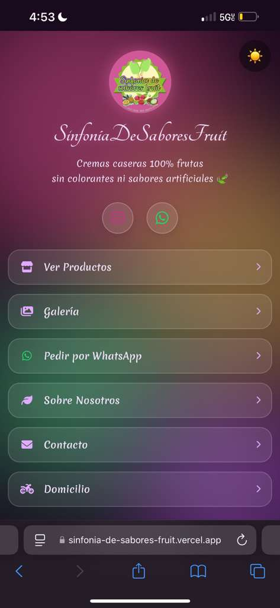

Frontend Developer
Construyo interfaces web modernas y rápidas con HTML, CSS y JavaScript. Páginas para negocios, apps con base de datos en tiempo real y diseño responsive desde cero.
Diego Caldera Escobar
Decidí estudiar programación porque desde muy pequeño sabía lo que quería. Me apasiona aprender, construir cosas desde cero y ver cómo el código cobra vida. Hoy estoy estudiando Tecnología de SOFTWARE en el SENA y cada día me acerca más a mi meta.
Mi Stack
Tecnologías que uso para construir proyectos
 HTMLAvanzado
HTMLAvanzado
 CSSIntermedio
CSSIntermedio
 JavaScriptIntermedio
JavaScriptIntermedio
 GitAvanzado
GitAvanzado
 VercelAvanzado
VercelAvanzado
 TailwindIniciando
TailwindIniciando
Proyectos
Algunos de los proyectos donde muestro mis habilidades en desarrollo web

Sinfonía de Sabores Fruit
App de compra de productos digitales con domicilios y ventas físicas.

Barbershop
App para barbería moderna con reservas, catálogo de servicios y gestión de clientes.

TaskFlow
App de gestión de tareas con tablero kanban por estados y prioridades en tiempo real.
Currículum
Experiencia y datos de contacto
- 302 544 9170
- diegopscobar@gmail.com
- Medellín, Colombia
- portafolio-pink-pi.vercel.app
- github.com/diegopscobar-ops
Tecnología en Desarrollo y Análisis de Software
SENA — En curso
Desarrollador frontend de 18 años, Medellín. Construyo interfaces modernas desde cero — páginas para negocios, apps con Supabase y diseño responsive adaptado a móvil. En constante formación en el SENA y listo para aportar en proyectos reales.
Proyecto independiente — Desarrollo web
3 meses- Desarrollo de páginas web con HTML, CSS y JavaScript
- Integración de base de datos con Supabase
- Deploy y gestión de proyectos en Vercel
- Diseño responsive adaptado a móvil